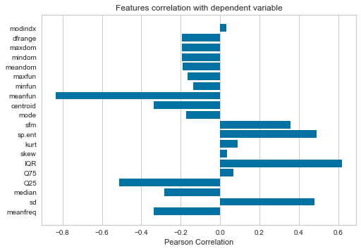

import pandas as pd
Gender voice dataset¶
Source : https://www.mldata.io/dataset-details/gender_voice/¶
meanfreq - mean frequency (in kHz)
sd - standard deviation of frequency
median - median frequency (in kHz)
IQR - interquantile range (in kHz)
sp.ent - spectral entropy
centroid - frequency centroid (see specprop)
minfun - minimum fundamental frequency measured across acoustic signal
label - Predictor class, male or female
data = pd.read_csv('datasets/gender_voice_dataset.csv')
data.sample(10)
| meanfreq | sd | median | Q25 | Q75 | IQR | skew | kurt | sp.ent | sfm | ... | centroid | meanfun | minfun | maxfun | meandom | mindom | maxdom | dfrange | modindx | label | |
|---|---|---|---|---|---|---|---|---|---|---|---|---|---|---|---|---|---|---|---|---|---|
| 291 | 0.048254 | 0.070167 | 0.015790 | 0.008229 | 0.058268 | 0.050040 | 3.289199 | 12.906251 | 0.830441 | 0.300592 | ... | 0.048254 | 0.100127 | 0.016719 | 0.275862 | 0.183364 | 0.007812 | 4.882812 | 4.875000 | 0.069912 | male |
| 1190 | 0.207960 | 0.061353 | 0.238038 | 0.140381 | 0.266267 | 0.125886 | 2.571208 | 10.683324 | 0.868951 | 0.274106 | ... | 0.207960 | 0.122592 | 0.046967 | 0.268156 | 1.792221 | 0.023438 | 6.421875 | 6.398438 | 0.161921 | male |
| 2810 | 0.231343 | 0.029296 | 0.227883 | 0.218175 | 0.245766 | 0.027591 | 2.644273 | 9.934500 | 0.789733 | 0.117383 | ... | 0.231343 | 0.199985 | 0.047431 | 0.279070 | 1.775082 | 0.234375 | 19.453125 | 19.218750 | 0.104709 | female |
| 1534 | 0.157928 | 0.059404 | 0.133126 | 0.108241 | 0.217700 | 0.109459 | 2.850184 | 13.123892 | 0.901424 | 0.390069 | ... | 0.157928 | 0.108966 | 0.049505 | 0.161290 | 0.518852 | 0.083008 | 0.791016 | 0.708008 | 0.626369 | male |
| 327 | 0.154345 | 0.061858 | 0.158243 | 0.100908 | 0.205361 | 0.104453 | 2.791509 | 13.058492 | 0.920559 | 0.524902 | ... | 0.154345 | 0.100617 | 0.049751 | 0.277778 | 0.735763 | 0.107422 | 3.569336 | 3.461914 | 0.269394 | male |
| 2473 | 0.198333 | 0.057894 | 0.213907 | 0.197953 | 0.232465 | 0.034512 | 2.624526 | 9.595826 | 0.876050 | 0.400094 | ... | 0.198333 | 0.175645 | 0.048000 | 0.277457 | 1.379788 | 0.023438 | 6.351562 | 6.328125 | 0.089719 | female |
| 2560 | 0.218046 | 0.044257 | 0.220260 | 0.180260 | 0.260779 | 0.080519 | 1.886142 | 6.762014 | 0.867115 | 0.202030 | ... | 0.218046 | 0.180807 | 0.047105 | 0.275862 | 1.065848 | 0.187500 | 7.804688 | 7.617188 | 0.116923 | female |
| 1449 | 0.179108 | 0.061642 | 0.176245 | 0.142920 | 0.238773 | 0.095853 | 1.851029 | 7.034257 | 0.920308 | 0.431603 | ... | 0.179108 | 0.122968 | 0.050000 | 0.277457 | 1.080469 | 0.023438 | 4.382812 | 4.359375 | 0.192368 | male |
| 772 | 0.163002 | 0.058707 | 0.173992 | 0.103128 | 0.205679 | 0.102551 | 1.550271 | 5.280638 | 0.930426 | 0.481643 | ... | 0.163002 | 0.108706 | 0.020177 | 0.246154 | 0.655625 | 0.093750 | 4.906250 | 4.812500 | 0.210836 | male |
| 109 | 0.179029 | 0.065368 | 0.164454 | 0.126415 | 0.247681 | 0.121267 | 2.141880 | 8.493103 | 0.912945 | 0.436573 | ... | 0.179029 | 0.125993 | 0.026667 | 0.181818 | 0.440104 | 0.070312 | 5.843750 | 5.773438 | 0.110352 | male |
10 rows × 21 columns
data[['label']].sample(10)
| label | |
|---|---|
| 2600 | female |
| 2380 | female |
| 611 | male |
| 2234 | female |
| 1322 | male |
| 754 | male |
| 248 | male |
| 1533 | male |
| 520 | male |
| 1652 | female |
data.shape
(3168, 21)
Describing values¶
data.describe().T
| count | mean | std | min | 25% | 50% | 75% | max | |
|---|---|---|---|---|---|---|---|---|
| meanfreq | 3168.0 | 0.180907 | 0.029918 | 0.039363 | 0.163662 | 0.184838 | 0.199146 | 0.251124 |
| sd | 3168.0 | 0.057126 | 0.016652 | 0.018363 | 0.041954 | 0.059155 | 0.067020 | 0.115273 |
| median | 3168.0 | 0.185621 | 0.036360 | 0.010975 | 0.169593 | 0.190032 | 0.210618 | 0.261224 |
| Q25 | 3168.0 | 0.140456 | 0.048680 | 0.000229 | 0.111087 | 0.140286 | 0.175939 | 0.247347 |
| Q75 | 3168.0 | 0.224765 | 0.023639 | 0.042946 | 0.208747 | 0.225684 | 0.243660 | 0.273469 |
| IQR | 3168.0 | 0.084309 | 0.042783 | 0.014558 | 0.042560 | 0.094280 | 0.114175 | 0.252225 |
| skew | 3168.0 | 3.140168 | 4.240529 | 0.141735 | 1.649569 | 2.197101 | 2.931694 | 34.725453 |
| kurt | 3168.0 | 36.568461 | 134.928661 | 2.068455 | 5.669547 | 8.318463 | 13.648905 | 1309.612887 |
| sp.ent | 3168.0 | 0.895127 | 0.044980 | 0.738651 | 0.861811 | 0.901767 | 0.928713 | 0.981997 |
| sfm | 3168.0 | 0.408216 | 0.177521 | 0.036876 | 0.258041 | 0.396335 | 0.533676 | 0.842936 |
| mode | 3168.0 | 0.165282 | 0.077203 | 0.000000 | 0.118016 | 0.186599 | 0.221104 | 0.280000 |
| centroid | 3168.0 | 0.180907 | 0.029918 | 0.039363 | 0.163662 | 0.184838 | 0.199146 | 0.251124 |
| meanfun | 3168.0 | 0.142807 | 0.032304 | 0.055565 | 0.116998 | 0.140519 | 0.169581 | 0.237636 |
| minfun | 3168.0 | 0.036802 | 0.019220 | 0.009775 | 0.018223 | 0.046110 | 0.047904 | 0.204082 |
| maxfun | 3168.0 | 0.258842 | 0.030077 | 0.103093 | 0.253968 | 0.271186 | 0.277457 | 0.279114 |
| meandom | 3168.0 | 0.829211 | 0.525205 | 0.007812 | 0.419828 | 0.765795 | 1.177166 | 2.957682 |
| mindom | 3168.0 | 0.052647 | 0.063299 | 0.004883 | 0.007812 | 0.023438 | 0.070312 | 0.458984 |
| maxdom | 3168.0 | 5.047277 | 3.521157 | 0.007812 | 2.070312 | 4.992188 | 7.007812 | 21.867188 |
| dfrange | 3168.0 | 4.994630 | 3.520039 | 0.000000 | 2.044922 | 4.945312 | 6.992188 | 21.843750 |
| modindx | 3168.0 | 0.173752 | 0.119454 | 0.000000 | 0.099766 | 0.139357 | 0.209183 | 0.932374 |
Label encoding¶
from sklearn.preprocessing import LabelEncoder
labelEncoder = LabelEncoder()
data['label'] = labelEncoder.fit_transform(data['label'].astype(str))
data['label'].sample(10)
1475 1
1935 0
1615 0
1524 1
1567 1
2754 0
1669 0
1909 0
1501 1
2087 0
Name: label, dtype: int64
data.boxplot(by ='label', column =['meanfreq'], grid = False, figsize=(10, 8))
<matplotlib.axes._subplots.AxesSubplot at 0x1a222dea50>
data.boxplot(by ='label', column =['dfrange'], grid = False, figsize=(10, 8))
<matplotlib.axes._subplots.AxesSubplot at 0x1a22679610>
Spilting the data into train and test data¶
from sklearn.model_selection import train_test_split
features = data.drop('label', axis=1)
target = data['label']
x_train, x_test, y_train, y_test = train_test_split(features, target, test_size=0.2)
x_train.shape , y_train.shape
((2534, 20), (2534,))
x_test.shape , y_test.shape
((634, 20), (634,))
Logistic Regression Classifier¶
https://scikit-learn.org/stable/modules/generated/sklearn.linear_model.LogisticRegression.html
from sklearn.linear_model import LogisticRegression
from sklearn.metrics import confusion_matrix
logistic_model = LogisticRegression(penalty='l2', solver='liblinear')
logistic_model.fit(x_train, y_train)
LogisticRegression(C=1.0, class_weight=None, dual=False, fit_intercept=True,
intercept_scaling=1, max_iter=100, multi_class='warn',
n_jobs=None, penalty='l2', random_state=None, solver='liblinear',
tol=0.0001, verbose=0, warm_start=False)
y_pred = logistic_model.predict(x_test)
confusion_matrix = confusion_matrix(y_test, y_pred)
print(confusion_matrix)
[[266 45]
[ 8 315]]
print("Training score : ", logistic_model.score(x_train, y_train))
Training score : 0.9068666140489345
Accuracy, precision, recall scores¶
from sklearn.metrics import accuracy_score, precision_score, recall_score
acc = accuracy_score(y_test, y_pred)
pre = precision_score(y_test, y_pred)
recall = recall_score(y_test, y_pred)
print('Accuracy : ' , acc)
print('Precision Score : ', pre)
print('Recall Score : ', recall)
Accuracy : 0.916403785488959
Precision Score : 0.875
Recall Score : 0.9752321981424149
from yellowbrick.target import FeatureCorrelation
feature_names = list(features.columns)
visualizer = FeatureCorrelation(labels = feature_names)
visualizer.fit(features, target)
visualizer.poof()

<matplotlib.axes._subplots.AxesSubplot at 0x1c23223cd0>
from sklearn.feature_selection import chi2, f_classif, mutual_info_classif
from sklearn.feature_selection import SelectKBest
## TODO: While recording, re-record from here first with chi2, then with f_classif and then with mutual_info_classif
select_univariate = SelectKBest(chi2, k=4).fit(features, target)
features_mask = select_univariate.get_support()
features_mask
array([False, True, False, True, False, True, False, False, False,
False, False, False, True, False, False, False, False, False,
False, False])
selected_columns = features.columns[features_mask]
selected_columns
Index(['sd', 'Q25', 'IQR', 'meanfun'], dtype='object')
selected_features = features[selected_columns]
selected_features.head()
| sd | Q25 | IQR | meanfun | |
|---|---|---|---|---|
| 0 | 0.064241 | 0.015071 | 0.075122 | 0.084279 |
| 1 | 0.067310 | 0.019414 | 0.073252 | 0.107937 |
| 2 | 0.083829 | 0.008701 | 0.123207 | 0.098706 |
| 3 | 0.072111 | 0.096582 | 0.111374 | 0.088965 |
| 4 | 0.079146 | 0.078720 | 0.127325 | 0.106398 |
x_train, x_test, y_train, y_test = train_test_split(selected_features, target, test_size =.2)
from sklearn.linear_model import LogisticRegression
logistic_model = LogisticRegression(penalty='l2', solver='liblinear')
logistic_model.fit(x_train, y_train)
LogisticRegression(C=1.0, class_weight=None, dual=False, fit_intercept=True,
intercept_scaling=1, max_iter=100, multi_class='warn',
n_jobs=None, penalty='l2', random_state=None, solver='liblinear',
tol=0.0001, verbose=0, warm_start=False)
y_pred = logistic_model.predict(x_test)
acc = accuracy_score(y_test, y_pred)
pre = precision_score(y_test, y_pred)
recall = recall_score(y_test, y_pred)
print('Accuracy : ' , acc)
print('Precision Score : ', pre)
print('Recall Score : ', recall)
Accuracy : 0.9037854889589906
Precision Score : 0.8707865168539326
Recall Score : 0.9538461538461539